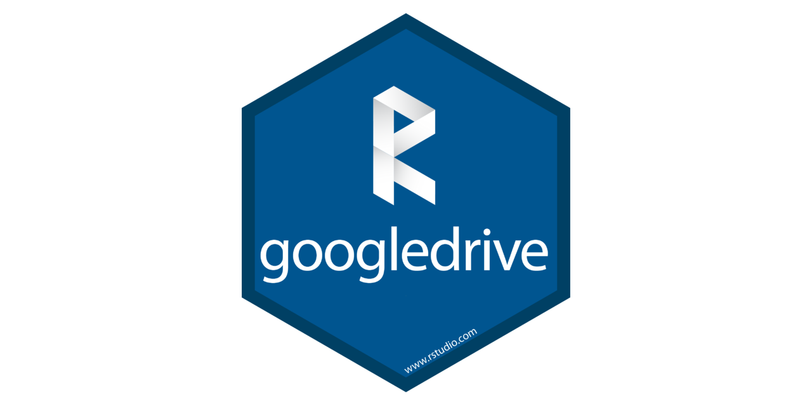
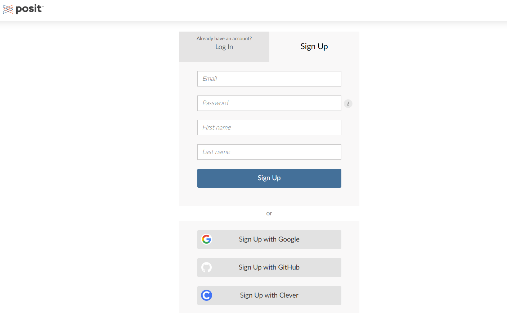
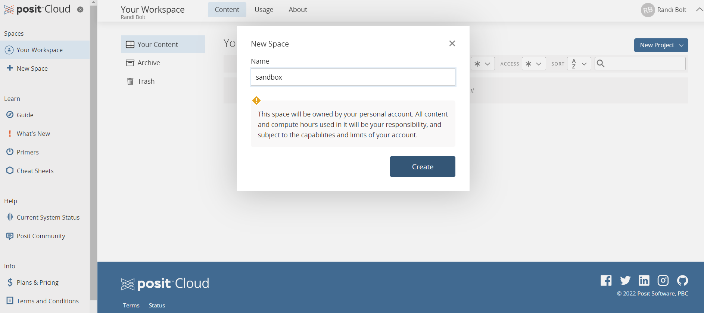
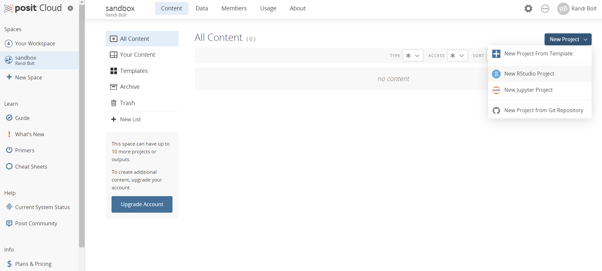
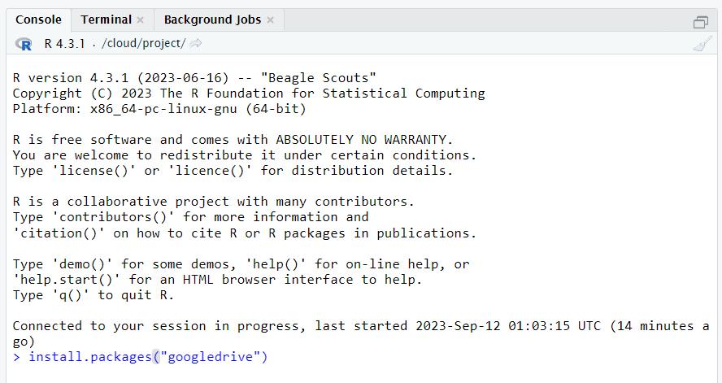

# Install googledrive package
install.packages("googledrive")Posit Cloud and Google Drive Package
R
Streamline your workflow with Posit Cloud and the googledrive package. Consider this a simple introduction to effortless data management and collaboration.

Introduction
In the quest to automate reporting and enhance productivity, the fusion of Posit Cloud and the googledrive package emerges as a powerful solution. In this guide, I’ll walk you through the essential steps, from setting up Posit Cloud to authorizing the googledrive package. Along the way, I’ll provide practical examples of how to harness their capabilities for streamlined data management and collaboration. By the end, you’ll not only have a solid grasp of these tools but also understand the distinct advantages they offer over alternative methods. Let’s dive in!
Getting Started with Posit Cloud
Setting up Posit Cloud is the first crucial step in this streamlined data management process. It involves creating an account, and configuring your workspace. This integration enables seamless collaboration and data access for your team. Below, we’ll explore each these steps in more detail, with accompanying screenshots to guide you through the process.
Create an Account on Posit Cloud:
To begin your journey with Posit Cloud, visit posit.cloud and sign up for an account.

Add a New Workspace:
After successfully creating your account, log in to Posit Cloud. Within your account dashboard, navigate to the workspace management section. Here, you can create a new workspace, which serves as a dedicated environment for your projects and data.

Create a New Project Within Your Workspace:
With your workspace in place, it’s time to initiate your first project. Within the workspace, you can create and manage multiple projects, each representing a specific task or objective. Set up your project by specifying its name, objectives, and relevant details to get started efficiently.

Working with the googledrive Package
In the realm of efficient data management and collaboration, the googledrive package is your trusty companion. This section will unveil the capabilities of this powerful tool, guiding you through the steps needed to harness its potential for seamless file organization, sharing, and automation.
Installing the googledrive Package and Connecting to Google Drive:
Begin by installing the googledrive package and connecting it to your Google Drive account. This step establishes the link between your R environment and Google Drive.

# Load googledrive package
library(googledrive)Creating Folders (Making Directories):
Learn how to create folders (directories) in your Google Drive using R.
Real-Life Example: Automating Monthly Folder Creation:
Showcase the power of the googledrive package with a practical example. Create a function that takes the current month as input, names each folder with that month, and automatically generates these folders in your Google Drive.
Uploading PDFs and Data Files
Explore how to load PDFs and data files from your local system into Google Drive using R.
Real-Life Example: Upload Data and Documents
Delve deeper into folder management and place data files and pdf’s into the folders you previously created.
Updating and Renaming Files or Folders:
Modify existing files or folders including updating file contents, changing folder names, or altering file permissions.
Deleting Folders:
Finally, explore the process of deleting folders when they are no longer needed.